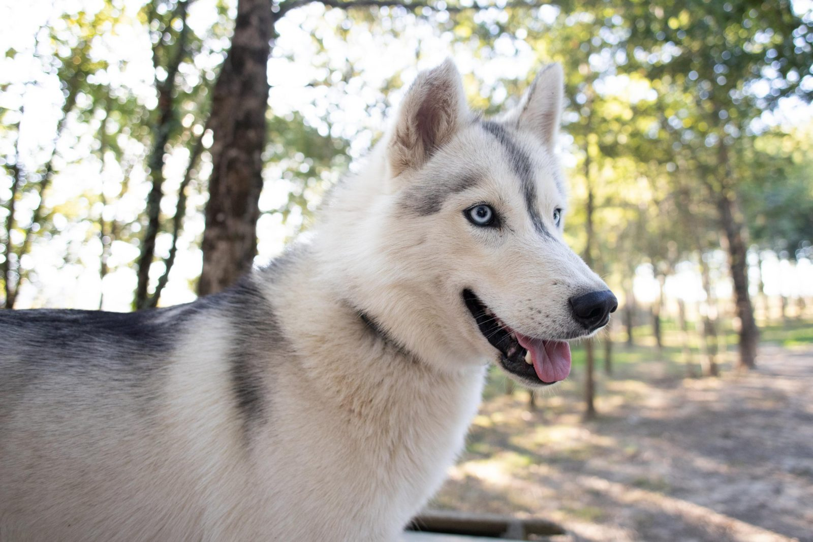

L'image de fond ne représente pas les activités proposées par l'association.
Retour
Le mushing en Creuse : Husk'in Creuse
Inédit dans le département !
Vous souhaitez allier sport et plaisir, venez découvrir les activités de Husk'in Creuse.
Husk'in Creuse propose diverses disciplines tractées par des chiens nordiques telles que la cani-rando, cani-trotte et cani-kart !

Menu
L'histoire du parc
Les tarifs
A proximité
L'album photos
En savoir plus